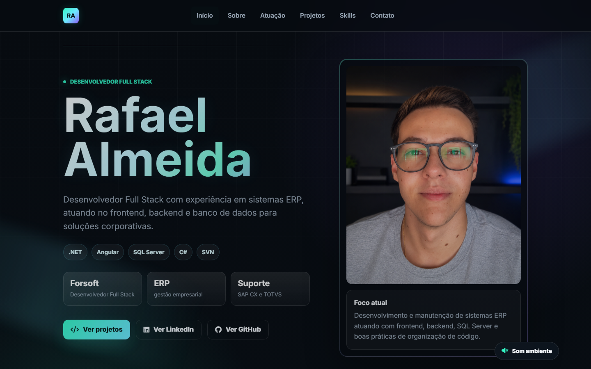
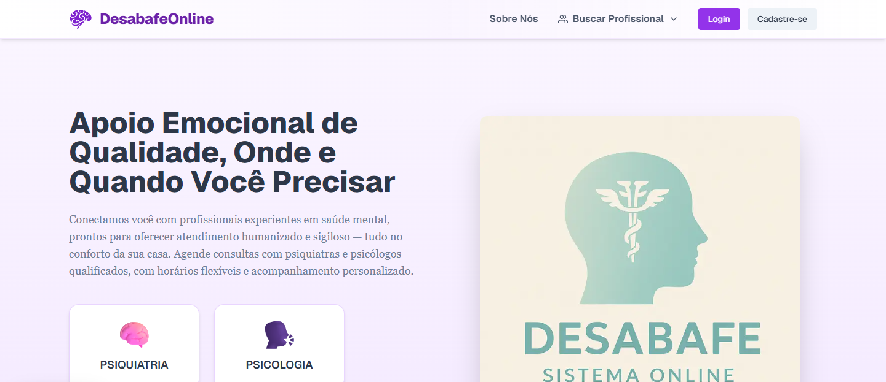
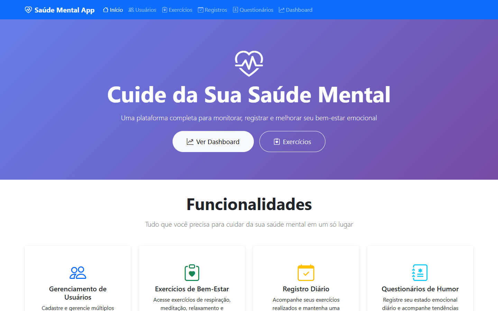
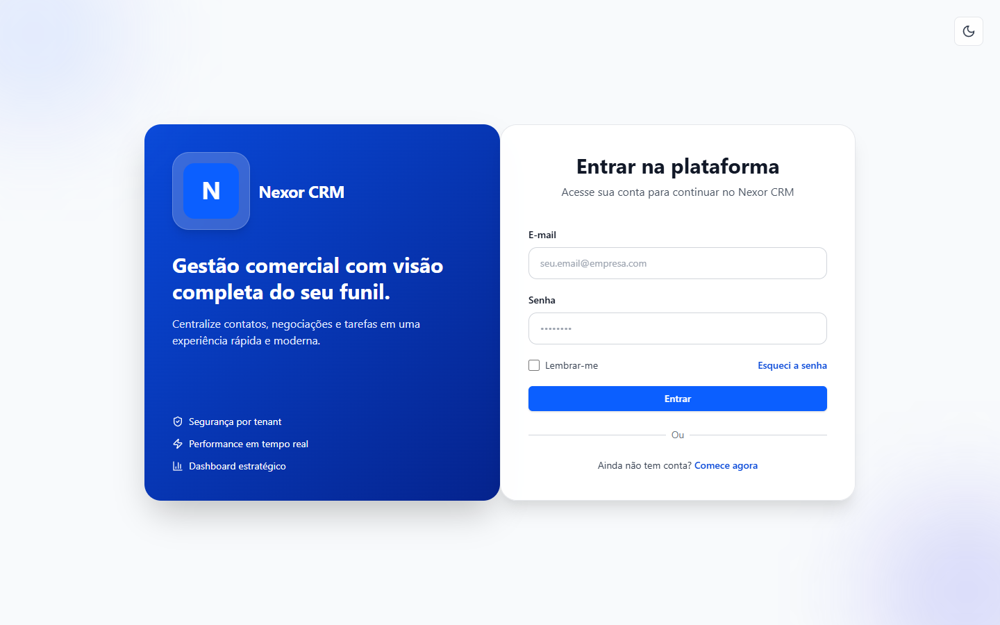

Desenvolvedor Full Stack
Forsoft
Desenvolvedor Full Stack
ERP
gestão empresarial
Suporte
SAP CX e TOTVS
Rafael Almeida
Desenvolvedor Full Stack com experiência em sistemas ERP, atuando no frontend, backend e banco de dados para soluções corporativas.
.NET
Angular
SQL Server
C#
SVN
Sobre mim
Desenvolvedor com vivência em ERP, suporte técnico e sistemas corporativos.
Sou formado em Análise e Desenvolvimento de Sistemas e atualmente atuo como Desenvolvedor Full Stack na Forsoft, participando da implementação de novas funcionalidades, manutenção de sistemas existentes e construção de soluções organizadas para gestão empresarial.
Também desenvolvi experiência em suporte técnico na CentralAr.com, trabalhando com SAP CX, Protheus ERP TOTVS, infraestrutura e atendimento aos usuários. Essa trajetória me deu uma visão prática sobre desenvolvimento, operação, resolução de problemas e necessidades reais de negócio.
Desenvolvedor Full Stack
Forsoft - frontend com Angular, backend em .NET/C#, SQL Server, SVN e sistemas ERP
Suporte técnico e sistemas corporativos
CentralAr.com - SAP CX, Protheus ERP TOTVS, infraestrutura e atendimento técnico
Análise e Desenvolvimento de Sistemas
Centro Católico Salesiano Auxilium
Técnico em Desenvolvimento
Centro Paula Souza - Etec Araçatuba
Atuação
O que eu entrego no dia a dia.
Minha experiência combina desenvolvimento web, visão de sistemas ERP e atendimento técnico, o que ajuda a construir soluções mais úteis para usuários e equipes.
Sistemas ERP
Atuação com manutenção e evolução de sistemas de gestão empresarial, considerando regras de negócio, processos e uso real.
Interfaces web
Construção de telas organizadas, responsivas e objetivas usando Angular, React, TypeScript, HTML, CSS e JavaScript.
APIs e integrações
Experiência com backend, banco de dados, autenticação, consumo de APIs e integração entre camadas do sistema.
Suporte com visão técnica
Vivência com SAP CX, Protheus TOTVS, infraestrutura e atendimento, trazendo contexto prático para resolver problemas.
Experiência atual
Forsoft | Desenvolvedor Full Stack
Desenvolvimento e manutenção de sistemas ERP atuando no frontend com Angular, backend em .NET/C#, consultas e rotinas em SQL Server e versionamento com SVN.
Projetos
Projetos que mostram minha evolução técnica.
Seleção inicial com projetos acadêmicos, estudos web e um CRM SaaS em desenvolvimento local. Depois podemos adicionar prints reais e demos.

Portfólio profissional
Site pessoal redesenhado para apresentar experiência profissional, formação, habilidades, trajetória em sistemas corporativos e projetos com uma interface moderna e responsiva.
- Layout responsivo para celular e desktop.
- Seção de projetos pronta para prints e estudos de caso.
- Texto revisado e navegação mais clara.

DesabafeTCC
Plataforma web desenvolvida como TCC para conectar pessoas a apoio psicológico e psiquiátrico, com interface de agendamento, cadastro e navegação orientada à experiência do usuário.
- Frontend em Next.js, React e TypeScript.
- Uso de Tailwind, componentes modernos e layout responsivo.
- Backend Node/Express para suporte às funcionalidades do sistema.

SaúdeMental
Aplicação Java com Spring Boot para acompanhamento de saúde mental, com páginas web, CRUDs, registros diários, questionários de humor e dashboard analítico.
- Backend em Java 17, Spring Boot, JPA/Hibernate e H2 Database.
- Views com Thymeleaf, Bootstrap e JavaScript.
- Dashboard com gráficos Chart.js, estatísticas e análise de evolução.

CRM SaaS Multi-tenant
Sistema CRM local em desenvolvimento para pequenas empresas, com arquitetura SaaS multi-tenant, backend em Django REST Framework e frontend em React com TypeScript.
- Isolamento de empresas por schema no PostgreSQL.
- API com autenticação JWT, Redis, Celery e documentação OpenAPI.
- Frontend com Vite, React Query, Zustand, Tailwind, Recharts e drag-and-drop.
Projeto local
Skills
Tecnologias, sistemas e ferramentas.
const perfilTecnico = {
frontend: [".NET + Angular", "React", "TypeScript"],
backend: ["C#", "Django REST", "Node/Express"],
dados: ["SQL Server", "PostgreSQL", "H2"],
sistemas: ["ERP", "SAP CX", "Protheus TOTVS"],
workflow: ["SVN", "Git", "GitHub"]
}Desenvolvimento
.NET
Angular
C#
SQL Server
HTML5
CSS3
JavaScript
TypeScript
Ferramentas e sistemas
SAP CX
Protheus ERP TOTVS
SQL Server
SVN
GitHub
Git
Terminal
VS Code
Contato
Vamos conversar sobre tecnologia, projetos ou networking?
Atualmente trabalho como Desenvolvedor Full Stack na Forsoft e sigo evoluindo em .NET, Angular, C#, SQL Server, integrações e soluções para sistemas corporativos.
Aberto a conexões, networking e troca de ideias sobre tecnologia, ERP e desenvolvimento web.